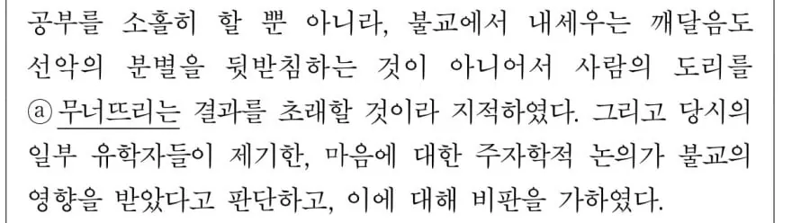
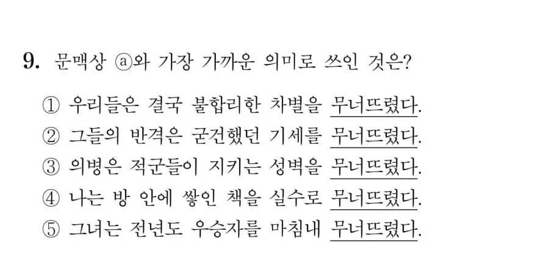

답은 1
2번이랑 많이들 헷갈린듯


답은 1
2번이랑 많이들 헷갈린듯
수능 리트라이 가능
걍 인터넷 애들 태반이 틀리는 데/대 구분문제
~할 데가 없다 에서 데를 때로 쓴다든지 이런 맞춤법 파괴가 많은데 이거 내면 킬러일듯
갈 때까지 갔다
하던 말던
이렇게 두개 선지에 있으면 오답률 낭낭할 듯
ㄹㅇ 갈때가 대체 어느땐데 ㅋㅋㅋ
1번
걍 다른 건 안 보고 사람의 도리랑 가장 느낌이 비슷 한 거 골랐더니 맞았네
1번 없었으면 2번이 답이었을 듯
무너트리는 대상의 실체가 있음과 없음의 차이같은데 아님랄로
반대되는 말 기준으로 1 번이 답인거 같았어
사람의 도리를 무너뜨리다 <->도리를 세우다
차별을 무너뜨리다 - 차별(벽을)을 세우다
기세를 무너뜨리다 - 기세를 높이다
345번은 애초에 물리적상태니까 답이 아니고
왜 이게 오답률이 높지 싶네
기세나 차별이나 둘 다 눈에 보이지 않는 추상적인 대상이라..
추상적 의미의 무너뜨리다로 접근하면 답을 못찾겠는데?
그리고 도리가 무너지는거랑 기세가 무너지는게 둘다 안좋은 상황이고
차별이 무너지는건 뭔가 긍정적인 상황에 대한 설명같아서
2번 엄청 찍었을 것 같은데?
기세를 저지했다로 쓸수있을거같은데 도리를 저지시킬수는 없을거같음
저지하다라는 단어로 1:1치환하면 그렇지,
'망치다' 같은 느낌으로 접근하거나, '헝클어뜨리다' 같은 느낌으로 접근하면 모호해짐.
애당초 이렇게 많이 틀린건 수험생들이 다 바보들도 아니고 다 이유가 있는거니까, 정답율을 존중하자.
출제입장에서도 정답률 30% 예상하고 출제하지 않았을거고, 결과가 이렇게 나왔으면 충분히 불평할 수 있다고 본다
근데 기세를 헝클어뜨리거나 망친다는 말이 어색하지 않냐
뭐 오답자들이 이렇게 많음을 이해해보려고 노력하는거지.
3,4,5 번은 너무 아니라서 대부분 70~80%가 1,2번 사이에서 찍었을거라고 본다면
그럼에도 정답율이 30%라는건, 오히려 2번을 더 많이 선택하지 않았을까 싶기도 하고
기세라는건 마음가짐이고
도리와 차별은 가치로 해석했는데 맞을까?
수능 3등급맞음
당연히 1번이라 하기 어려움.
1, 2 둘다 추상적 개념을 무너뜨리는 거라서 오답율 높을 수밖에
애초에 사전적 정의로 기세는 별도로 빠져있음. 이걸 한국인은 관념적으로만 뜻을 이해하고 있기 때문에 한 번 고민하기 시작하면 2번으로 답 고르기 쉬움
1.
쌓여 있거나 서 있는 것을 허물어 내려앉게 하다.
성벽을 무너뜨리다.
예문 열기
2.
질서, 제도, 체제 따위를 파괴하다.
윤리를 무너뜨리는 공연.
예문 열기
3.
권력을 빼앗거나 나라를 멸망하게 하다.
왕정을 무너뜨리다.
예문 열기
4.
계획이나 구상, 생각 따위를 깨다.
반대자들의 주장을 무너뜨리다.
예문 열기
5.
기준, 선 따위를 뚫거나 깨다.
방어선을 무너뜨리다.
예문 열기
6.
세력 따위를 없애거나 약하게 하다.
상대편의 기세를 무너뜨리다.
야매 풀이이긴한데... 기세를 무너뜨렸다를 다른 말로 기세를 꺾었다라고 씀. 그런데 사람의 도리를 꺾었다라고 하면 완전 이상한 구문이 됨. 차별을 무너뜨렸다를 다른 말로 차별을 철폐했다라고 씀. 그런데 사람의 도리를 철폐했다라고 하면 이상하긴한데, 사람의 도리를 꺾었다보다는 그럴듯해서 1번 찍음.
맞는 풀이임.
도리와 차별은 사람의 태도라서 그런거고
기세는 말그대로 세력이라 범주가 다름
문어트름
난그냥 본문예시를 사회, 집단의 시스템, 규칙에 대한 행위라고 이해했음.
1. 차별을 없앴다.
2. 기세를 꺾었다.
3. 성벽을 부셨다.
4. 책을 엎었다.
5. 우승자를 이겼다.
도리를 없애는 결과를 초래할 것이라~
이거아닌가?
많이틀릴만하네
사회적 질서를 무너뜨리다
2. 일종의 질서는 맞지만, 사회적인 것도 아니고 명확히 규정된 것이 아님
3. 물리적 질서
4. 물리적 질서
5. 질서라고 하기엔 모호함
1. 사회적 질서에 가장 가까움
예시는 부정적이고 1번은 긍정적이라서 헷갈린 거라면 이해되는 듯
당사자가 아니라 생각보다 쉽네.
수능 시험장에서는 어려웠을듯
답은 맞혔는데 풀이가 맞는지는 모르겠음ㅋㅋ
도리를 무너뜨리는거랑 차별을 무너뜨리는건 제거의 의미로 인식해서 같은거라 생각했고
나머지 2345는 제거의 의미보단 파괴,붕괴,원질서를 흐트러뜨림 정도로 생각돼서 제낌
도리를 저버리다 라고 접근하면 기세를 저버리다 라고 되지않을까했는디…
나 1번 찍었는데 리트 쳐도 되나요?